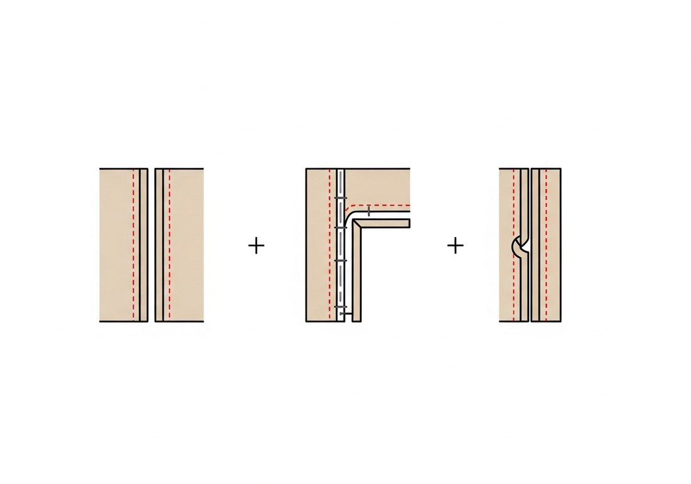
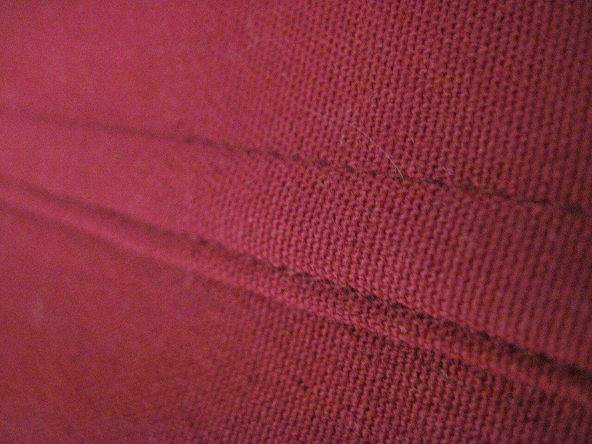
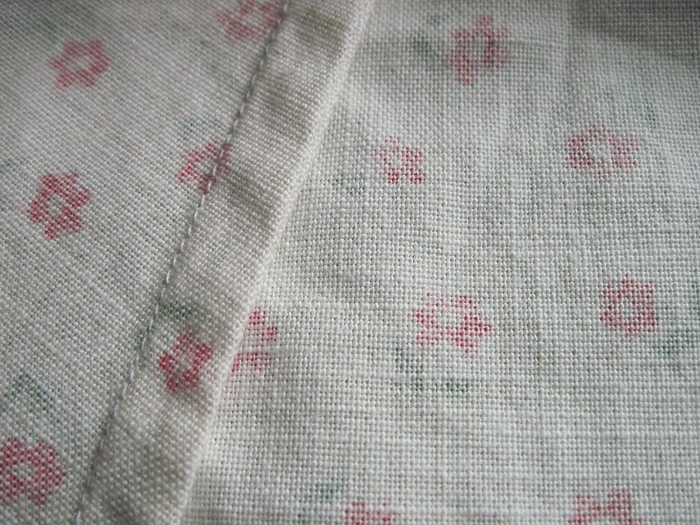
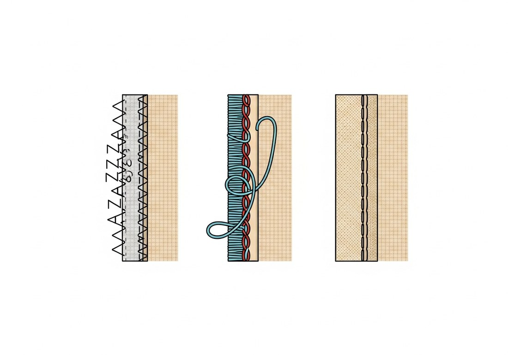
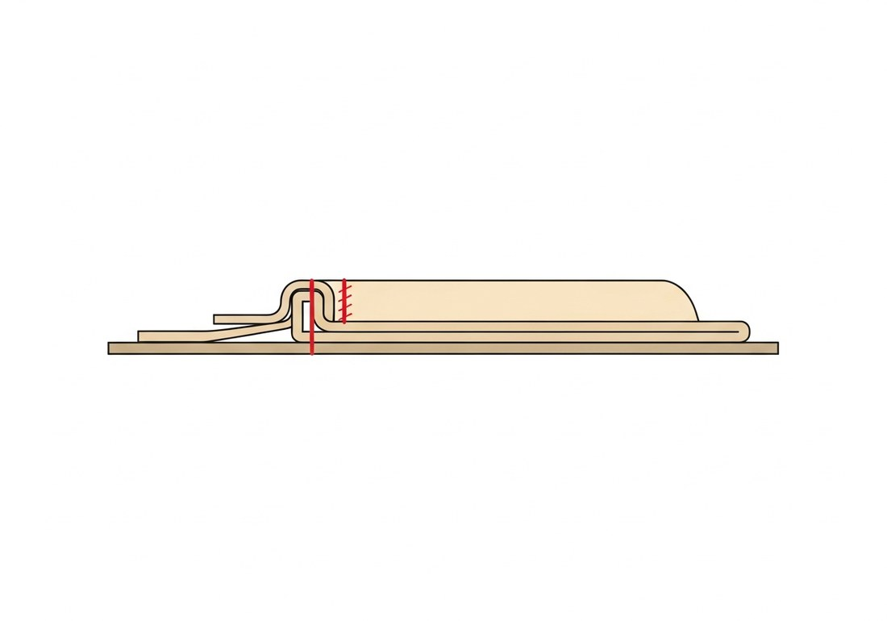
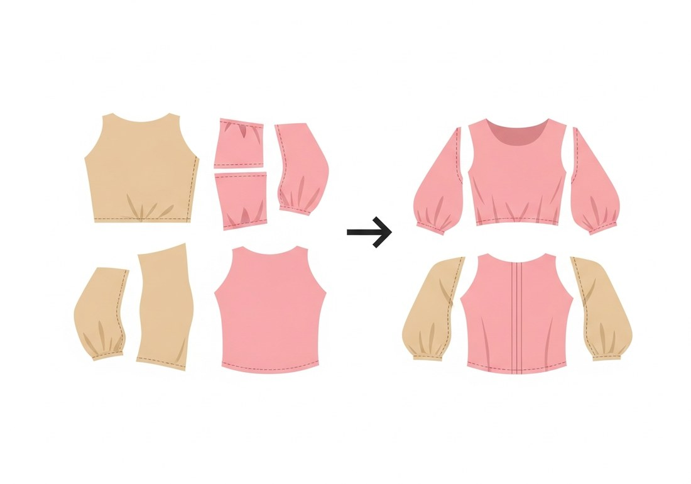

Көркем еңбек · 3-бөлім · Тігін ісі Art & Craft · Section 3 · Sewing Художественный труд · Раздел 3 · Швейное дело
✂️ Тігу технологиясы: бөлшектерді өңдеу және жинау
✂️ Sewing Technology: Finishing & Assembling the Pieces
✂️ Технология пошива: обработка и сборка деталей
Қиылған бөлшектен дайын бұйымға дейінгі жол: тігістер, срездерді өңдеу, жинау реті. From a cut piece to a finished garment: seams, edge finishing and the order of assembly. Путь от выкроенной детали до готового изделия: швы, обработка срезов, порядок сборки.
Тігу технологиясы — қиылған жеке бөлшектерді белгілі бір ретпен біріктіріп, дайын бұйымға айналдыру тәсілдерінің жүйесі. Әр бұйым бөлшектерден (полочка, арқа, жең, жаға) тұрады. Алдымен әр бөлшектің срезі (шеті) өңделеді, содан кейін бөлшектер тігістермен қосылады, ал соңында ылғал-жылулық өңдеумен (үтіктеу) пішіні бекітіледі. Дұрыс технология — тігіс түзу, мата мыжылмайды, бұйым ұзақ қызмет етеді деген сөз. Sewing technology is the system of methods for joining separate cut pieces, in a set order, into a finished garment. Every garment is made of pieces (front, back, sleeve, collar). First each raw edge is finished, then the pieces are joined with seams, and finally the shape is fixed by pressing (heat-and-steam treatment). Good technology means straight seams, fabric that does not fray, and a garment that lasts. Технология пошива — это система приёмов, как соединить отдельные выкроенные детали в определённом порядке и получить готовое изделие. Любое изделие состоит из деталей (полочка, спинка, рукав, воротник). Сначала обрабатывают срез (край) каждой детали, затем детали соединяют швами, а в конце форму закрепляют влажно-тепловой обработкой (утюжкой). Правильная технология — это ровные швы, ткань, которая не осыпается, и изделие, которое служит долго.
Жалғаушы тігістер Connecting Seams Соединительные швы
Бөлшектерді бір-бірімен біріктіреді. 🔍 Суретті басып үлкейтіңіз. They join the pieces together. 🔍 Tap an image to enlarge it. Соединяют детали друг с другом. 🔍 Нажмите на изображение, чтобы увеличить.

Тачной (стачной)Plain seamСтачной
Ең қарапайым: екі бөлшек бетін бетке қойып тігіледі, тігіс қоры ашылады немесе бір жаққа жаншылады.The simplest: two pieces are stitched right sides together, the allowance is pressed open or to one side.Самый простой: две детали стачивают лицом к лицу, припуск разутюживают или заутюживают на сторону.
НастрочнойTopstitchedНастрочной
Тігіс қоры бір жаққа бүгіліп, үстінен қосымша машина жолы салынады. Берік әрі әдемі.The allowance is folded to one side and a second line of stitching is added on top. Strong and neat.Припуск заутюживают в одну сторону и сверху прокладывают ещё одну строчку. Прочно и аккуратно.
ЗапошивочныйFlat-felledЗапошивочный
Срез ішке бүгіліп, жасырылады — шеті мүлдем ашылмайды. Төсек-орын, жейде, джинсыға қолданылады.The raw edge is tucked and enclosed, so it never shows. Used for bed linen, shirts and jeans.Срез подгибают и прячут внутрь — край совсем не виден. Применяют для белья, рубашек, джинсов.


Срездерді (шеттерді) өңдеу Finishing the Raw Edges Обработка срезов и краёв
Мата шетінің ыдырауын болдырмайды. 🔍 Схеманы басыңыз. Stops the cut edge from fraying. 🔍 Tap a scheme. Не даёт краю ткани осыпаться. 🔍 Нажмите на схему.

зигзаг · оверлок · бүктемеzigzag · serge · foldзигзаг · оверлок · подгибка

етек бүктемесі (подгибка)hem (folded edge)подгибка низа
Шетті неге өңдейміз?Why finish an edge?Зачем обрабатывать край?
Ыдырамауы үшін.No fraying.Чтобы не осыпался. Өңделмеген срез жуғаннан кейін шашырайды.An unfinished edge unravels after washing.Необработанный срез распускается после стирки.
Зигзаг / оверлок.Zigzag / serge.Зигзаг / оверлок. Жіп срезді орап, бекітеді — ішкі тігістерге.Thread wraps and locks the edge — for inner seams.Нить обвивает и закрепляет срез — для внутренних швов.
Бүктеме (подгибка).Hem.Подгибка. Шетті екі рет бүгіп тігеміз — етек, жең ұшы, бел.The edge is folded twice and stitched — hems, cuffs, waist.Край дважды подгибают и пристрачивают — низ, манжета, пояс.
Көріктілік.Neat look.Аккуратность. Өңделген шет бұйымды таза әрі әрлі етеді.A finished edge makes the garment clean and tidy.Обработанный край делает изделие чистым и опрятным.
Бұйымды жинау реті The Order of Assembly Последовательность сборки
Бөлшектен бұйымға — белгілі ретпен. 🔍 Сызбаны басыңыз. From pieces to a garment — in a set order. 🔍 Tap the diagram. От деталей к изделию — в строгом порядке. 🔍 Нажмите на схему.

Дайындау.Prepare.Подготовка. Бөлшектерді тексеру, белгілерді салу, срездерді өңдеу.Check the pieces, mark them, finish the edges.Проверить детали, нанести разметку, обработать срезы.
Қармау (намётка).Baste.Намётка. Бөлшектерді алдымен қолмен ірі тігіспен бекіту.First tack the pieces by hand with long stitches.Сначала скрепить детали вручную крупными стежками.
Машинамен тігу.Machine-stitch.Стачивание. Иық, бүйір тігістерін, содан соң жеңдерді машинамен тігу.Sew the shoulder and side seams, then set in the sleeves.Стачать плечевые, боковые швы, затем втачать рукава.
Тораптарды өңдеу.Finish details.Обработка узлов. Жаға, қалта, ілгек-түймені өңдеу.Make the collar, pockets and fastenings.Обработать воротник, карманы, застёжку.
Етекті бүктеу.Hem.Подгибка низа. Етек пен жең ұшын бүктеп тігу.Turn up and stitch the hem and cuffs.Подогнуть и подшить низ и манжеты.
Соңғы үтіктеу.Final press.Окончательная ВТО. Дайын бұйымды үтіктеп, пішінін бекіту.Press the finished garment to set its shape.Отутюжить готовое изделие, закрепить форму.
🔥 Ылғал-жылулық өңдеу (ЫЖӨ)Heat-and-Steam PressingВлажно-тепловая обработка (ВТО)
Үтіктеу — жай ғана тегістеу емес, технологияның бөлігі. Әр тігісті тігіп болған соң үтіктейді («қанша тіксең, сонша үтікте»). Ылғал мен жылу матаны жұмсартып, тігіс жатық, бұйым пішінді болады. Әр матаның өз температурасы бар: жібек — төмен, мақта мен зығыр — жоғары. Қызып кетпеу үшін бұрышты жерден сынап көреді немесе үстіне нәзік мата (проутюжильник) қояды. Pressing is not just smoothing — it is part of the technology. Each seam is pressed right after it is sewn ("press as much as you sew"). Moisture and heat soften the fabric so the seam lies flat and the garment keeps its shape. Every fabric has its own temperature: silk — low, cotton and linen — high. To avoid scorching, test on a corner or cover the fabric with a thin press cloth. Утюжка — это не просто разглаживание, а часть технологии. Каждый шов заутюживают сразу после стачивания («сколько шьёшь — столько и утюжишь»). Влага и тепло размягчают ткань, шов ложится плоско, а изделие держит форму. У каждой ткани своя температура: шёлк — низкая, хлопок и лён — высокая. Чтобы не сжечь, проверяют на уголке или кладут сверху тонкую ткань (проутюжильник).
Шеберхана сөздігі Workshop Glossary Словарь мастерской
| Термин | Что значит |
|---|---|
| Деталь | Отдельная выкроенная часть изделия (полочка, спинка, рукав). |
| Срез | Край детали после раскроя; его обрабатывают, чтобы не осыпался. |
| Припуск на шов | Запас ткани вдоль среза для соединения деталей (обычно 1–1,5 см). |
| Намётка | Временное ручное соединение деталей крупными стежками перед строчкой. |
| Стачать | Соединить две детали машинной строчкой. |
| ВТО | Влажно-тепловая обработка — придание и закрепление формы утюгом. |
| Термин | Мағынасы |
|---|---|
| Бөлшек | Бұйымның жеке қиылған бөлігі (полочка, арқа, жең). |
| Срез | Қиюдан кейінгі бөлшек шеті; ыдырамауы үшін өңделеді. |
| Тігіс қоры | Бөлшектерді қосуға арналған срез бойындағы қор (әдетте 1–1,5 см). |
| Намётка | Машинадан бұрын бөлшектерді ірі қол тігісімен уақытша бекіту. |
| Стачать | Екі бөлшекті машина жолымен біріктіру. |
| ЫЖӨ (ВТО) | Ылғал-жылулық өңдеу — үтікпен пішін беру және бекіту. |
| Term | Meaning |
|---|---|
| Piece (detail) | A single cut part of the garment (front, back, sleeve). |
| Raw edge | The cut edge of a piece; it is finished so it won't fray. |
| Seam allowance | Spare fabric along the edge for joining pieces (usually 1–1.5 cm). |
| Basting | Temporarily joining pieces by hand with long stitches before sewing. |
| To stitch (join) | To join two pieces with a line of machine stitching. |
| Pressing (ВТО) | Heat-and-steam treatment that shapes and sets the fabric. |
💬 Қорытынды 💬 In a nutshell 💬 Главное
Тігу технологиясы — бұл рет: алдымен әр бөлшектің срезін өңдеп, содан соң оларды дұрыс тігістермен қосып, ылғал-жылулық өңдеумен бекітеміз. Срездерді өңдеу, дұрыс тігіс таңдау және әр тігісті үтіктеу — бұйымды берік әрі әдемі ететін үш кілт. Асықпай, ретімен істелген жұмыс — сапалы бұйымның кепілі. Sewing technology is an order: first finish the raw edge of each piece, then join them with the right seams, and set everything with pressing. Finishing the edges, choosing the right seam and pressing every seam — these are the three keys to a strong, beautiful garment. Work done step by step, without rushing, is the guarantee of quality. Технология пошива — это порядок: сначала обработать срез каждой детали, затем соединить их правильными швами и закрепить всё влажно-тепловой обработкой. Обработка срезов, верный выбор шва и утюжка каждого шва — три ключа к прочному и красивому изделию. Работа, сделанная по шагам и без спешки, — залог качества.